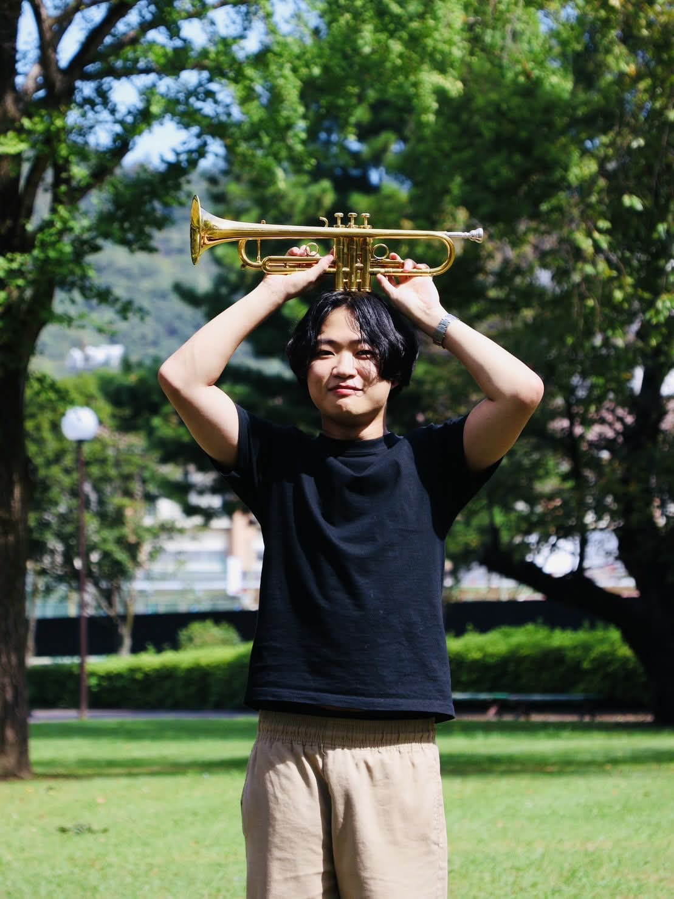
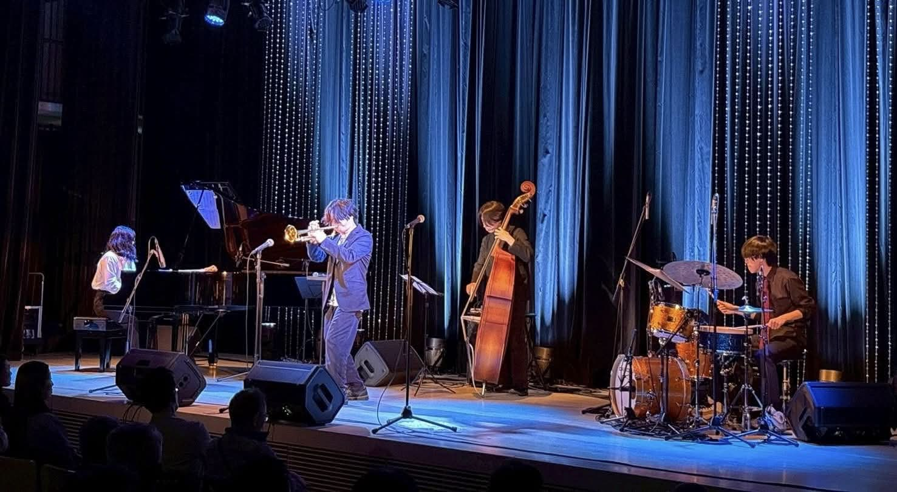
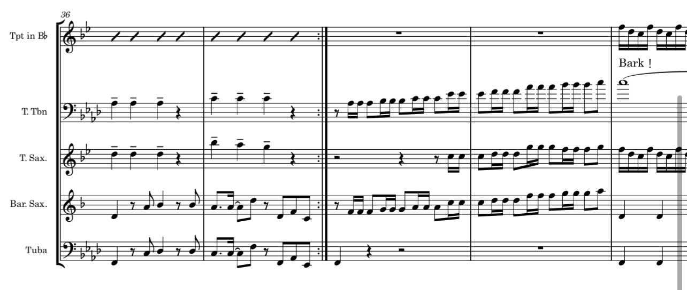

平田咲汰郎 / Saku は、岐阜を拠点に活動するジャズトランペッター、作編曲家。
音楽大学でジャズを専攻し、トランペットを渡辺勉、上田じん、藤島謙治各氏に師事。ビッグバンドのリードトランペット、コンボでの即興演奏、録音制作、ホーンアレンジ、譜面制作まで幅広く活動している。
自身のバンド「Saku & The Jazz Elements」では、ハードバップの熱量と歌心を軸に、メンバーや観客との対話から生まれる“その場にしかない音”を追求している。

平田咲汰郎がリーダーを務めるジャズプロジェクト。オリジナル曲とハードバップの熱量を軸に、メンバーそれぞれの個性を活かしたライブを展開しています。
ジャズ、ポップス、ブラス系の録音に対応。歌心のあるソロ、メロディ演奏、ホーンセクションなど、楽曲に合わせたトランペットを提供します。

ホーンアレンジ、アドリブソロ譜、ビッグバンドや小編成向けの譜面制作に対応しています。
ネットカルチャーやポップスとブラスサウンドを掛け合わせた企画も展開しています。
ライブ出演、イベント演奏、レコーディング、ホーンアレンジ、譜面制作など、内容に応じて柔軟に対応しています。
編成・日程・ご予算を添えて、まずは内容をお聞かせください。
今後のライブ情報、出演情報、リリース情報を掲載予定です。